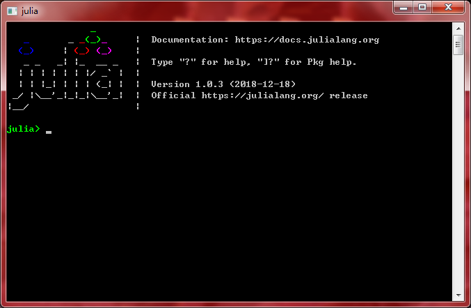

@author: Tianhao Zhao
@date: April 21, 2019
@copyright: free
Prepare your Julia 1.0 for economic researchInformal IntroductionWhy Julia?Who need Julia?Zombie Codes?Calling Python or R?Used to Matlab?Install Julia 1.0 + Atom + JupyterStep 0: Other environments you may needStep 1: Install core JuliaStep 2: Update pre-installed packagesStep 3: Install JupyterStep 4: Prepare your Juno IDE based on AtomStep 5: (Optional) Prepare your VSCode with JuliaInstalling 3rd-party packagesInstalling PyCallCase 1: Anaconda PythonCase 2: Official Python installationInstalling RCallPopular 3rd-party packages for economic researchVisualization in JuliaStart coding in Julia
This blog provides a useful list for economists to install and prepare their Julia 1.0 environment for economic research. Similar to many on-line instructions, this blog recommend users combine their Julia with mature Python, R, C and Fortran libraries to obtain most comfortable coding experience. However, this blog prepares a series of questions to help users decide which packages are what they really need.
Of course, I always agree that it is thoughts, mathematics, algorithms and designs that really matter rather than specific languages. Languages are just how to tell these things. A well-trained developer is required to learn any language in hours and quickly begin to work with it. However, for some specific purposes, e.g. economic research, a proper language can visibly improve productivities. This is the reason why I introduce and recommend Julia language in this blog. This language has several impressive advantages which make it a top choice for different economists.
Learning cost is one of the main reasons that people are not willing to use a new language. Sometimes they even do not look through a small function with patience.
"oh no, unreadable! so strange syntax! what exactly does the symbol $ mean!" (by someone without programming trainings)
"It looks familiar but still some subtle differences there ... but holy f**k, who cares. I am too busy to learn them!" (by someone familiar to one or two languages but worry about a sharp learning curve)
"I am used to old grandpa Fortran. I keep reservation about if that new guy is worth learning. Too costing to transfer my works to a new language." (by someone with piles of zombie codes)
"Yes, it is quite easy to learn. But is it necessary? or is it worth spending time on?" (by programmers used to many other popular languages)
Are you one of the four types of perspective developers? If so, please look at:
randn()). You have approached to the final when you start! And, if you do not want to drop your old projects in other languages, just call them from Julia! It is so easy a job that you can make it like calling Julia programs with least contact cost. And, in most cases, Julia's performance is better than R, Matlab and Python (even in linear algebras!).Of course, this blog is not for general purpose but mainly for economists. So what next to introduce are targeted at economic research. They are definitely useful for economists but may not be so for developers in other fields.
Many economists may have "zombie codes" which were developed years ago and extremely hard to refactor or optimize. This happens usually in large economic model systems such as an old DSGE. These codes are usually written in Fortran or C. In addition to translation or re-documentation, Julia is able to call the methods in these libraries with least cost like just calling them from local Fortran or C programs. It means zombie codes will not lose any performance when called from Julia. Therefore, economists have no need to worry about the transfer cost from one old language to Julia. Please refer to https://docs.julialang.org/en/v1/manual/calling-c-and-fortran-code/ for technical details of how to call C or Fortran codes in Julia programs.
Nowadays, R language has become the 1st choice to do econometric research. Even I will primarily write R programs for a econometric study. (Of course, Julia has its own statistical APIs but the number of relative packages is not very large now) In the same way, Python, which though provides less user-friendly statistical APIs, is also popular in econometric research. So, how can those economists who have been used to R or Python transfer their projects to Julia? Or how can they continue writing Python/R programs in Julia without learning costs? Further, how can they combine the advantages, e.g. the impressive number of R's statistical packages, with Julia's high-performance computing?
The solution is so straight that economists can just leave their Python/R environments with no extra change, but just calling them from Julia with least contacting/calling cost.
xxxxxxxxxx101# julia 1.02 using RCall # R-lang calling API3# just pacakge your R program in a string and evaluate it!4R"5 dat <- data.frame(y=rnorm(100),x1=rnorm(100),x2=rnorm(100))6 mod <- lm( y ~ x1 + x2, data = dat )7 summary(mod)8 modcoef <- coefficients(mod)9"10coef = (modcoef) # pull variable valuesIn the above demo, RCall package starts a backend R session and evaluates given R programs. the @rget macro pulls the value of modcoef from the R session and automatically converts it to a Julia vector. The total time cost, including contact cost, is less than 0.005 seconds. When coef or some other R-results pulled, users may use powerful optimization APIs such as JuMP to effectively improve their productivity. Of course, R programs in a string means that the metaprogramming advantages of both R & Julia can now be perfectly combined. In Julia REPL, users may even type $ to enter an R REPL and directly write R programs. Please refer to http://juliainterop.github.io/RCall.jl/stable/gettingstarted.html for the full usage of RCall. (There are only several syntaxes to remember. 5min, then you can start to work with R in Julia!)
Things go similar in PyCall, another popular Python API in Julia. However, because Python is not a functional language like R or Lisp, this package uses symbols to calling Python programs. But do not worry, it is still easy to learn PyCall. Please refer to https://github.com/JuliaPy/PyCall.jl for more guidance. And, I will use a single section to talk about how to perfectly install your PyCall and build it with your custom Python installation.
Matlab is so popular in economic teaching that most economic departments require students to write their homework codes in Matlab. It is not only because Matlab has a plain syntax which is readable across readers with different programming backgrounds, but also because there is less "lazy" packages in Matlab which allow students to be "package callers". However, though Matlab is powerful in industrial production and economic teaching, it has two main disadvantages which prevent it to be the most ideal language for economic research:
optimization toolbox. A near-C performance of numerical operations makes Matlab so popular in computing-focused cases. However, this software/language lacks the ability of general programming and shows impressive low performance in non-linear-algebra scenarios. It works well in little research projects but shows its short-band when program logics go complicated.In economic teaching, Matlab is enough. But in research, esp. in large-scale economic models and other performance-matter projects, it becomes less satisfying.
So, can Julia be a better alternative of Matlab in most cases? How much can Julia improve than Matlab? There are several points Matlab users need to know:
optimization toolbox. Its comparable alternatives can be found in Julia, such as JuMP and Optim. For economists familiar to GAMS, SAS/OR or Lingo, they will find no obscure when simply running their codes in Julia withJuMP; for those used to Matlab's optimization toolbox, Optim provides nearly the same APIs, options and parameters as those in Matlab's optimization toolbox. The performance? Well, equal or better in Julia!
Considering many economists also use Python, R, MatLab, Fortran, C/C++ and other development environments, I recommend them to prepare these softwares before installing Julia in anyway they like, and add the executables to PATH variable (esp. Python and R). Julia will use user’s own installations (like Python, R) to build RCall and PyCall. (Please note, until this blog, JavaCall is not supported by Julia 1.0 yet) And, Julia will not interfere other development environments.
Readers may download core language from Julia's official website. It is only about 50MB and easy to install. Julia Pro is a powerful release of Julia language for scientific computing. In addition to core language, this release provides a Juno IDE based on Atom, IJulia REPL, and the support of Jupyter Notebook. Like Anaconda, users may easily download and install Julia Pro from: https://juliacomputing.com/.
However, in this blog, I will introduce how to DIY isntall Julia 1.0 + Atom + Juno + Jupyter to deploy an equivalent production environment as Julia Pro, from UI to functions. This is because recent Julia pro releases (until v1.0.3.2) meet some technical problems which is not easy to solve by beginners or non-programmer economists. But fortunately, it is easy to reproduce the tool chain of Julia pro release.
If you do not like the Juno IDE based on Atom, the "VScode + Julia plug-in" is a good alternative. However, this alternative does not support workspace pane which is provided in Juno. Users used to Matlab and R are recommended to continue using Juno.
In this tutorial, I will use Julia 1.0.3 as example. It is a long-term support release which ensures readers can totally follow this blog in the next few years.
Julia is a fast-growing language. It not only means more possibility, but also some problems raised by frequent updating. To make sure every underlying libraries ready for 3rd party packages, users are recommended to update all their packages when first starting a Julia session.
Julia has integrated a user-friendly package manager since v0.7. In a Julia REPL launched by JULIAINSTALL/bin/julia.exe or any other REPL looks like:

users can type ] to enter the package manager, where julia> now becomes (v1.0) pkg>. To return to normal julia REPL, just backspace at the beginning of current line. In the pkg mode, users can type help then press Enter to get a full documentation of pkg commands. Here we type in update then press Enter which tells Julia to update all possible packages, including core libraries. In default, Julia use repository registration on Github, so please make sure your internet can access to Github.com.
In addition to help and update, there are some most often-used commands in pkg:
add: install a registered package by name, or install a non-registered package through its git-repo. Users may specify a package with specific version by add packagename v”x.x.x”.remove: uninstall packages, similar to add.status: show a list of all packages installed (but no standard library) and their versions, status. Users can find a full documentation of standard libraries from Julia official documentation: https://docs.julialang.orgpin: froze a specific package to its current version. This command is very useful when you have carefully install all packages required and wanna work in this environment in a long time.free: free a package from pinned/frozen status to make it update-able.In default, Julia language is installed together with IJulia, a package providing the same functions as IPython for Python. This package also installs Julia kernel for Jupyter (if you have already installed your own Jupyter, for Python or others), or install a new Jupyter for those who do not have a Jupyter software.
If you have already got Jupyter: After updating all packages, please check your Jupyter to see if Julia 1.0.3 kernel appears. If not, please start a Julia REPL and run the following command in pkg mode:
xxxxxxxxxx11pkg> build IJuliaThis command re-builds IJulia package, which automatically installs a new Julia kernel or covers existing kernel.
If you do not have Jupyter: Run the same command to install Jupyter and add your Julia kernel.
To start a Jupyter notebook, start a Julia REPL then run the following code:
xxxxxxxxxx31# julia 1.02 using IJulia # using IJulia3notebook() # to start jupyter notebook backend, auto open your browserFor other functions such as Jupyter Lab, readers may read IJulia’s documentation at: https://github.com/JuliaLang/IJulia.jl
Juno IDE is a project based on the Atom editor published by Github Inc. Users can download Atom installer from: https://atom.io/. When Atom installed, please go to file -> Settings -> Install, search and install the following packages in order:
language-julia: Julia language highlighting, spell checker and formattingjulia-client: IDE-like layout and functions for Julia language in Atom, the body of Juno IDE for Julialatex-completions: Support of latex syntax and full-symbol set; working with Juno IDElanguage-markdown: Support for markdown; used in Juno IDE’s documentation systemindent-detective: For debugger of Juno IDEPlease note, installing Atom packages also requires the Internet access to Github.com.
When installing all the 5 Atom packages, you have already obtained the same IDE provided by Julia Pro release.
In the next section, we will focus on what 3rd packages to install, and how to correctly install them.
Many people are used to Visual Studio Code and wanna continue developing their Julia programs in VSCode. Fortunately, there has been a solution, the julia plug-in. This plug-in can be simply searched and installed in VSCode’s plug-in market. When installed, users need to specify the executable path (e.g. C:/Julia/bin/julia.exe), then they can start their coding. Please refer to https://github.com/JuliaEditorSupport/julia-vscode for more information.
Though core Julia & standard libraries can handle most of daily research and teaching, using 3rd-party packages can help you visibly improve your productivity in economic research. (like solving PDE, visualization and doing regression) Fortunately, Julia provides a user friendly package manager pkg which is highly integrated and connected to Github. We will use it to prepare many popular 3rd-party packages which are useful in economic research.
In this section, I firstly introduce how to correctly install RCall and PyCall because beginners often get problems while bridging Julia with the two languages. Then, I provide a list which covers most popular 3rd-party packages about economics. These packages can be simply added through pkg> add PackageName command. Finally, I roughly discuss the visualization in Julia which has several realizations. Readers can choose their favorite method to do visualization.
PyCallPyCall provides the API to calling Python programs in Julia. Calling Python in Julia becomes meaningful especially when economists are wanna use some machine learning or deep learning libraries in Python 1. (Well, TensorFlow has already got a Julia wrapper so users do not need PyCall to calling a python-based TensorFlow) However, because PyCall does not only depend on Julia installation but also depends on your Python installation, installing PyCall often meets some tough problems for beginners.
As mentioned above, I recommend users to install their Python before installing Julia, and add their python executable to PATH. The following instructions depend on what type of Python installations you use.
Anaconda is one of the most popular Python release. Many economists choose to install Anaconda as their Python installation. However, because Anaconda’s base environment has a different dependency structure from ordinary Python installation, users need to create a new virtual environment, add this new environment to PATH, then call this Python installation from Julia. If users build PyCall based on the base environment of Anaconda, the building will fail. About how to manage your Anaconda environments, please refer to: https://docs.conda.io/en/latest/
However, compared with manually manage your new Python environment, there is a better & recommended way to do this job: let Julia automatically create a Julia-private Python installation then use Anaconda Prompt/Navigator to conveniently manage it.
To do so, please follow the procedures below:
- Prepare your Anaconda & Julia; finish all the steps in the previous section; Make sure you can access to Github.com
- Open a Julia REPL, run
ENV["PYTHON"] = ""to reset the path of your local Python installation. This operation tellsPyCallto install a new environment but not use the current local Python installation.- Type in
]to enter the pkg manager mode.- Run
add Condacommand to install a small Julia package which cooks conda affairs. About how to use this package and how to specify a specific Python version in the next steps, please refer to: https://github.com/JuliaPy/Conda.jl- Run
add PyCallin the pkg mode, then wait until things finish.- If there is no error thrown, return to normal Julia mode, run
import PyCallto import PyCall package. If there is no error raised, congratulations!- If there are errors when importing
PyCallor you have installedPyCallon a wrong Python installation (e.g. the base environment of Anaconda). Do step 2 then go to the pkg mode and runbuild PyCallto re-build this package. When this package rebuilt, try again to import it.- When importing
PyCallworks, your Anaconda for Python will automatically find this installation and you can easily manage your python libraries there.
Please note, the official Julia installation (not Julia Pro release) has integrated PyPlot module, one of the most popular visualization API in Julia. It can work without a special PyCall package. However, when users add PyCall, the PyPlot package will depend on the new-added PyCall to call the matplotlib in your custom python environment. Use Anaconda to install matplotlib in your new python environment, then go to Julia, and run import PyPlot to see if this library works now.
About the usage of PyCall, please refer to https://github.com/JuliaPy/PyCall.jl. There is a very simple and intuitive demo of PyCall to display how easy to call Python in Julia:
xxxxxxxxxx121# julia 1.02 using PyCall3# run python script in a backend py session4py"""5import numpy as np6def func(x):7 return np.sin(x)8"""9# get/call py values/functions via py"String", PyCall auto do type conversions10x = py"func"(1.2)11# the result of python's func() is converted to Julia type and is assigned to x12println("the value of x is:", x)If you do not use Anaconda but install the official Python release, installing PyCall becomes easier because you can choose from using an existing python installation or creating a Julia-private one. For the latter, please follow the instructions of Case 1 (reset ENV["PYTHON"] then build the package). For the former, please check your ENV["PYTHON"] alright then add PyCall. For other cases such as wanna using virtualenv, please refer to https://github.com/JuliaPy/PyCall.jl
RCallSimilar to PyCall, RCall provides the API to your R-language installation. To ensure the RCall can automatically detect your R installation, please use the R language no earlier than 3.5.0. When add your R executable to PATH, e.g. C:\Program Files\R\R-3.5.3\bin, RCall can automatically locate it and build itself based on your R installation. If you have multiple R versions, please refer to https://github.com/JuliaInterop/RCall.jl for more help.
Installing RCall usually meets much fewer problems than installing PyCall. Users just need to go to Julia’s pkg mode and run add RCall. When installed, please return to normal Julia mode and import RCall to see if it works normally. Of course, do not forget to check ENV["R_HOME"] before adding RCall.
There is a simple demo of how to call R language in Julia:
xxxxxxxxxx111# julia 1.02 using RCall3# do a simple linear regression and get the coefficient4R"5 dat <- data.frame(y= rnorm(200), x= rnorm(200) )6 mod <- lm(y~x, data = dat)7 summary(mod); print(\"model estimated\")8 modcoef <- coefficients(mod)9"10# pull coef from R to Julia, auto type conversion11x = (modcoef)Or users can type in $ in normal Julia mode to enter an R REPL, where they can write original R programs. To return to Julia, just backspace at the beginning of current line.
In this section, users are recommended to use add PackageName or add PackageName v"x.x.x" command in the pkg mode to install all listed packages. They can also decide which packages to install or not install according to their research demands. Though installing order does not matter in most cases (because dependencies are automatically installed), users can install all the listed packages in order to make sure everything is OK 2. The listed package versions is the current version I am using. These versions are ensured to be compatible together also with Julia 1.0.3.
When all packages installed, users are strongly suggested to use pin PackageName to freeze every package to its current version. This avoids the possible conflict in the future when installing an unstable new package which updates some existing packages to an incompatible version.
| Name | Version | Class | Introduction |
|---|---|---|---|
| DataStructures | 0.14.0 | Data Type | |
| DataFrames | 0.14.0 | Data Type | |
| CSV | 0.4.3 | IO Stream | |
| LightGraphs | 1.2.0 | Data Type | |
| Calculus | 0.4.1 | Numerical | |
| QuadGK | 2.0.3 | Numerical | |
| TaylorSeries | 0.9.2 | Numerical | |
| SpecialFunctions | 0.7.1 | Numerical/Stats | |
| Distributions | 0.16.4 | Stats | |
| StatsBase | 0.25.0 | Stats | |
| StatsModels | 0.3.1 | Stats | |
| GLM | 1.0.1 | Stats | |
| TimeSeries | 0.14.1 | Data Type | |
| HypothesisTests | 0.8.0 | Stats | |
| StaticArrays | 0.10.3 | Data Type | |
| BenchmarkTools | 0.4.2 | Debug/Develop | |
| ForwardDiff | 0.10.3 | Numerical | |
| Roots | 0.7.3 | Optimization | |
| Optim | 0.18.1 | Optimization | |
| Rebugger | 0.3.1 | Debug/Develop | |
| Debugger | 0.4.0 | Debug/Develop |
QuantEcon is a project initiated by several famous economists such as Dr. Sargent. It provides a collection of useful tools in economic research, esp. in macroeconomic modeling, time series and quadratic DP problems. Though it seems to be designed mainly for the economists in macroeconomics, this project is a good reference for Julia beginners. However, it depends on many 3rd-party packages. It then does not have a high “version safety”. But users are recommended to add QuantEcon and have a try. It saves time in modeling many common methods.
Visualization is important for economic research, from statistical plotting to dynamic display. There are several popular packages in Julia to do this job:
matplotlib from Python. One of the most beginner-friendly visualization packages, esp. for MatLab & Python users. I have introduced its installation.ggplot2 in R. It is powerful but there is a problem that the first plotting by Gadfly in a Julia session is very, very slow. To install Gadfly, use the command add Gadfly. Meanwhile, users may like Cairo to make Gadfly work with full functions.GR library for C/C++. Its biggest advantage is the speed: faster than all the others. If you wanna quick response and demand high plotting speed, use GR. To install GR, just use command add GR 3.Plots is a front-end API which use one syntax to call different visualization backends e.g. PyPlot, GR. It cannot work alone but need to work with other packages like GR. The biggest advantage of using Plots is that you may write cross-platform visualization programs with the same syntax to save time and labor. Please go to Github and the official site of Plots to learn how to use Plots to improve your productivity.
Congratulations!
Now you have prepared your Julia for economic research and further development. Please refer to https://julialang.org/learning/ to begin your programming in Julia language!
Numba.↩GR may be time-costing, because this library need to be complied like in C/C++.↩